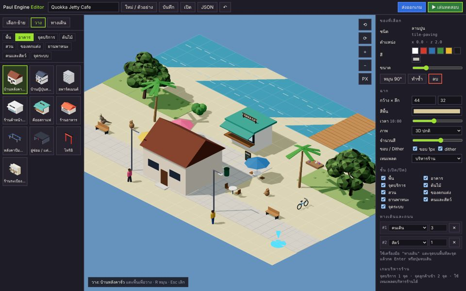

Paul Engine
เอนจินเกมบนเว็บของ Paul Perth AI Lab: วางฉากด้วยเมาส์หรือนิ้ว เลือกภาพแบบ 3D ปกติหรือ true pixel art ปรับเวลากลางวันกลางคืน แล้วกดเล่นเป็นเกมบริหารร้านได้ทันที ส่งออกเป็นไฟล์เกมไฟล์เดียว

เกมตัวอย่างที่ทำจากเอนจินนี้
ใช้งานยังไง
- เปิดตัวแก้ฉาก เลือก "ใหม่ / ตัวอย่าง" หรือเริ่มจากฉากว่าง
- เลือกของจากชั้นซ้าย (พื้น อาคาร จุดบริการ ต้นไม้ รถ คน) แล้วแตะพื้นเพื่อวาง · ลากเพื่อระบายพื้น · R หมุน
- วาง "จุดบริการ" อย่างน้อย 1 จุด (เคาน์เตอร์ คีออส แผง หรือตู้จ่ายน้ำมัน) และจุดลูกค้าเข้า
- กด ▶ เล่นทดสอบ แล้ว "ส่งออกเกม" ได้ไฟล์ HTML ไฟล์เดียว เอาขึ้นเว็บหรือส่งให้ Claude ทำต่อ
สำหรับ Claude และนักพัฒนา
โค้ดอยู่ใน engine/ ของ repo namchasang/paulperthailab ใช้ three.js r128 กับคลัง asset กลาง Paul Perth Library อ่านวิธีเพิ่ม asset และรูปแบบไฟล์ฉากได้ใน engine/README.md